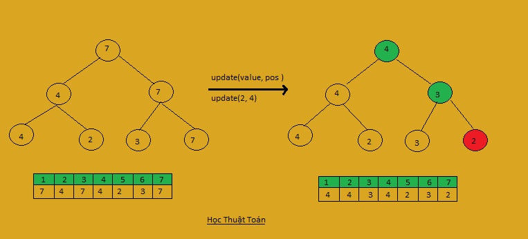

Segment Tree: là một cây nhị phân đầy đủ. Nút gốc sẽ quản lý toàn bộ đãy số của ta, trong khi đó 2 nút con sẽ chia đôi ra, Nút bên trái quản lý [1,N/2] và nút bên phải quản lý [N/2+1, N], tương tự như vậy các nút con sau cũng sẽ quản lý 1/2 dữ liệu của nút cha.
Câu hỏi đặt ra làm thế nào để có thể lưu trữ, quản lý được dữ liệu của cây này.
Sử dụng mảng để lưu. Bằng cách sau:
Gọi i là vị trí của các nút (của cây) khi được đưa vào mảng.
Nút gốc có i = 1, nút con bến trái sẽ được lưu ở il= 2*i,
nút con phải lưu ở ir=2*i+1. Các nút con tiếp theo cũng lưu tương tự như vậy.
Với cách lưu này độ dài mảng sẽ không vượt quá 4*N.
Vậy làm thế nào để chuyển từ mảng lưu giá trị thông thường sang cấu trúc của Segment Tree tham khảo code sau:
vector<int> a; //a là mảng giá trị
vector <int> tree (a.size()*4)
void build_tree(int id, int l, int r){
if(l==r) {
tree[id]= a[l];
return();
}
int mid= (l + r)/2;
build_tree(id*2, l, mid);
build_tree(id*2, mid+1, r);
tree[id]= max(tree[id*2], tree[id*2+1]);
}
Để hiểu hơn về cách mà một cây hoạt động ta tìm hiểu ví dụ sau:
Cho dãy N phần tử. Ban đầu mỗi phần tử có giả trị 0.
Có Q truy vấn. có hai truy vấn như sau:
Gán giá trị v cho phần tử ở vị trí i.
Tìm giá trị lớn nhất cho đoạn [i,j].
Vì bài toán này có yêu cầu tìm phần tử lớn nhất trong đoạn, nên khi cập nhật một nút nào đó bất kỳ ta cũng phải cập nhật lại các nút cha để tránh mất đi bản chất ban đầu. Tham khảo ảnh.

Id là vị trí nút gốc ban đầu
void update(int id, int l, int r, int i, int v) {
if (i < l || r < i) {
//kiểm tra i, để điều hướng tìm kiếm.
return ;
}
if (l == r) {
// nhận biết được lá
ST[id] = v;
return ;
}
//đi tìm nút i từ gốc xuống
int mid= (l+r)/2;
update(id*2, l, mid, i, v);
update(id*2+1, mid + 1, r, v);
// sau khi cập nhật 2 nút con xong, thì cập nhật giá trị nút cha
ST[id]= max(ST[id*2], ST[id*2+1]);
}
int get (int id, int l, int r, int u, int v){
//nếu nằm ngoài thì không trả về
if(v < l || u>r)
return -INFINTY;
if( u<=l && r<=v)
//nếu chứa đoạn LR thì trả về
return ST[id];
int mid= (l+r)/2;
return max(get(id*2, l, mid, u, v), get(id*2+1, mid+1, r, u, v))
}
Cho một mảng số nguyên bạn có thể thực hiên 2 thao tác sau:
* cập nhật một giá trị bất kỳ.
* Trả về giá trị min của đoạn [u, v] (l <= u, v <= r)
với Q truy vấn như trên, với mỗi thao tác thứ 2 in ra giá trị nhỏ nhất trong đoạn.
với 'U pos value ' là cú pháp dữ liệu thao tác cập nhật
với 'X u v ' là cú pháp dữ liệu thao tác lấy giá trị
| Input | Output |
|---|---|
| 4 3 4 5 3 7 U 2 2 U 4 1 X 1 4 |
1 |
#include
#define ll long long
#define F first
#define S second
#define pb push_back
using namespace std;
vector a;
void build_tree(int id, int l, int r, vector &tree){
if(l==r){
tree[id]=a[l];
return;
}
int mid= (l+r)/2;
build_tree(id*2, 1, mid, tree);
build_tree(id*2+1, mid+1, r, tree);
tree[id]= min(tree[id*2],tree[id*2+1]);
}
void update(int id, int l, int r, int i, int v, vector &tree){
if(ir)
return;
if(i==l && l==r){
tree[id]=v;
return;
}
int mid= (l+r)/2;
update(id*2, l, mid, i, v,tree);
update(id*2+1, mid+1, r, i, v, tree);
tree[id]= min(tree[id*2], tree[id*2+1]);
}
int get_min(int id, int l, int r, int u, int v,vector &tree){
if(v < l || r< u)
return INT_MAX;
if(r==l)//u< =l && r< =u
return tree[id];
int mid= (l+r)/2;
return min( get_min(id*2, l, mid, u, v, tree),
get_min(id*2+1,mid+1, r, u, v, tree));
}
int main(){
int n,q;
cin>>n>>q;
vector tree(n*4,0);
a.resize(n+1);
for(int i=1;i< =n;i++)
cin>>a[i];
build_tree(1,1,n,tree);
while(q--){
char x;
cin>>x;
if(x=='U'){
int i,v; // i is pos and v is value
cin>>i>>v;
update(1 ,1 ,n ,i ,v ,tree);
}
else{
int u,v;
cin>>u>>v; //[u,v] is length sub_array
cout<
}
}
}